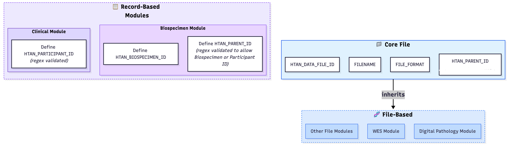

HTAN Core File Module
Universal attributes shared across all file-based modules in the HTAN project.
Purpose
Defines common attributes that every file-based data type in HTAN must have, eliminating duplication and ensuring consistency.
Module Architecture Overview

The diagram above illustrates the separation between Record-Based Modules (Clinical, Biospecimen) and File-Based Modules (WES, Digital Pathology, etc.), with the Core File Module providing universal attributes for all file-based modules.
Universal Attributes
Required Attributes
FILENAME: Name of the file (pattern:
^.+[\\\\/]\\S*$)FILE_FORMAT: Format of the file (e.g., fastq, bam, vcf, h5ad)
HTAN_DATA_FILE_ID: HTAN Data File ID (Primary Key)
HTAN_PARENT_ID: HTAN Parent ID - Foreign Key to parent entity (B for Biospecimen, D for data file)
Optional Attributes
None currently defined
Primary and Foreign Keys
Primary Keys (marked with identifier: true)
HTAN_DATA_FILE_ID: Unique identifier for data files across all levels
Required Fields (not primary keys in this context)
None - all required fields are either primary keys or foreign keys
Foreign Key
HTAN_PARENT_ID: References parent entity using suffix convention:
_B####- References a biospecimen (e.g.,HTA200_2_B7001)_D####- References a data file (e.g.,HTA200_2_D36667)
Validation Patterns
HTAN_DATA_FILE_ID
Pattern:
^(?=.{1,50}$)(HTA2[0-2][0-9])_(0000|EXT[0-9]{1,18}|[0-9]{1,21})_(D[0-9]{1,20})$Description: Primary key for data files. Supports HTA200-229 for phase 2. Total length max 50 characters.
Examples:
HTA200_2_D36667HTA200_EXT001_D123HTA229_0000_D1
HTAN_PARENT_ID
Pattern:
^(?=.{1,50}$)(HTA2[0-2][0-9])_(0000|EXT[0-9]{1,18}|[0-9]{1,21})_([BD][0-9]{1,20})$Description: Must have B suffix for biospecimen IDs or D suffix for data file IDs. Supports HTA200-229 for phase 2. Total length max 50 characters.
Examples:
HTA200_2_B7001(biospecimen with B suffix)HTA200_2_D36667(data file with D suffix)HTA229_0000_B1(biospecimen with 0000)HTA200_EXT001_D123(data file with extension)
Usage
Other modules inherit from Core:
imports:
- ../../CoreFile/domains/core
classes:
BulkWESLevel1:
is_a: CoreFileAttributes # Inherit universal attributes
attributes:
# WES-specific attributes only
LIBRARY_LAYOUT:
range: LibraryLayoutEnum
required: true
Design Notes
Base schema for inheritance, not a full module
No Python implementation generated (schema inheritance only)
All validation patterns enforced in JSON Schema generation
Provides foundation for all file-based data types